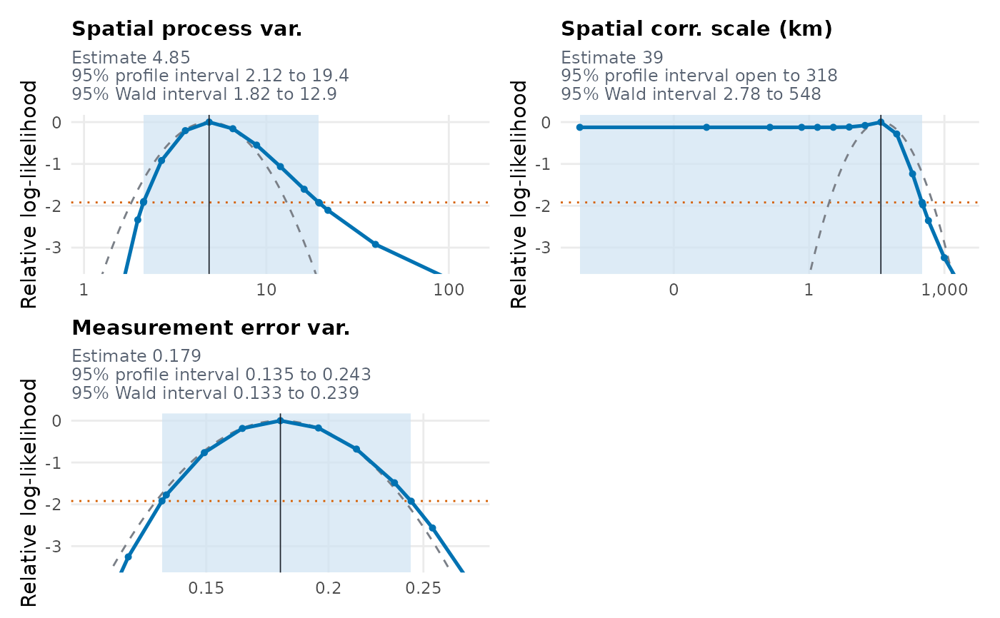

Goes through the checks on the computation of a model fitted
by glgpm(), says which are OK and which need a look, and gives the fix
where there is one. Checks that cost computing time run only when extra
names them. print() gives the verdict, summary() the numbers behind
each finding and plot() the figures. The model's own summary() gives
only the number of checks that need a look.
Arguments
- object
An object of class
"RiskMap"fromglgpm().- extra
Names of the extra checks to run,
"all"for every one. See Details. The default is none.- profile
An optional object of class
"RiskMap_profile"fromprofile.RiskMap()with marginal profiles for this fit. The profile check then uses it as it is, whatever parameters it covers, instead of computing one, whether or notextranames it.- messages
Logical, whether to say how long the extra checks should take before they start. Defaults to the option
RiskMap.messages, orTRUEif it is not set.- cores
Number of processes for the extra checks that can use several, passed to
profile.RiskMap(), whose results are the same on any number of cores.
Value
An object of class "RiskMap_check", a list with:
- checks
A data frame with one row per check, those that need a look first, and the columns
check,status("PROBLEM","SUSPICIOUS"or"OK"),finding,fix, which is empty where there is nothing to do, andbrief, the finding in a few words, whichprint()gives for a check that isOK.- draws
One sentence on the stages and draws of the fit,
NULLfor Gaussian models.- stages
For non-Gaussian models, a data frame with one row per stage and the columns
stage,proposal,certificate,radius_from,effective_drawsandpareto_k. The radius of the certificate is the larger of the radii of the certification draws and of a replicate of them, andradius_fromsays which it was ("certification"or"replicate"). The last two columns describe the certification draws. All three areNAfor a stage that did not reach them.- moves
A data frame with the absolute change in each
parameterbetween onestageand the one before it, in standard errors (move).NULLfor a fit with one stage or without standard errors.- tolerance
The tolerance on the certificate.
- results
A list with an element for each default check that ran, named by the check. Each holds its
rowofchecksand itsdata, a list of the numbers behind the finding.- extras
A list with an element for each extra check that ran, named as in
extra, each with itsrowand itsdata. Thedataof"profile"is the"RiskMap_profile"object. That of"radius"is a list with the predicted percentages of samples whose error exceeds the radius (level, with itslevel_interval), in which the error of the certification draws alone exceeds the radius (own), the share above the line in its panel, and whose error exceeds the bound (exceedance), thefactorby which the radius would have to grow forlevelto be 5%, themargin, thewideningof the radius with that margin, at least one, the bound so widened (widened), thesettingsof the check andsamples, a data frame with theerrorof each resampled sample and theradiusthe fit would use for it, the larger of its own and a replicate's, in standard errors.- not_computed
A named character vector giving, for each extra check that was asked for but not computed, the reason.
- fit_seconds
The time the fit took in seconds,
NULLwhere the fit did not record it.
Details
The checks concern the computation, not whether the model suits the
data, so OK does not mean that the model is adequate. They read what the
fit recorded, and add no statistical judgement of their own. The status
PROBLEM means that the estimate or its certificate should not be relied
on as it stands. SUSPICIOUS means that the computation is valid but the
result needs care. print() marks a check that is OK with a green
tick, one that is SUSPICIOUS with a yellow exclamation mark and a
PROBLEM with a red cross, and gives the fix after an arrow. The limit
of 0.7 on the tail shape of the importance weights, the Pareto shape, is
that of Vehtari et al. (2024).
A Gaussian fit has no Monte Carlo error, so its only default check says so.
A link other than logit, probit or cloglog for binomial data, or log for
counts, adds a row saying that it is not known to make the likelihood of
each location log-concave in its latent effect, so that the latent
effects can have more than one conditional mode. For a link given as a
function the row says where the log-likelihood of a record was found to
be convex, if it was, on a grid of linear predictors from -30 to 30,
which cannot show that it is concave everywhere. The row also says when
it has not been measured on simulated surveys how often the radius of
the bound on the Monte Carlo error is too small, as it has for the logit
and probit links of binomial data and the log link of counts, and points
to the check of the radius, which predicts it for the fit. Neither is a
fault of the fit, so the row is OK.
The default checks use only what the fit stored, so they take no time, apart from evaluating a link given as a function on the grid of linear predictors, a fraction of a second. If that link cannot be evaluated, as when it uses a variable no longer defined in the session, the row says only that its concavity is not known. The extra checks compute something new and add a row each. Before they start, a message says how long they should take, from the time the fit took. The extra checks are
"profile", the marginal profile likelihood of each covariance parameter of the fit fromprofile.RiskMap(), with its default settings. These are the spatial variance and scale, the nugget (its ratio to the spatial variance,nu2, or for a Gaussian fit its variance,tau2), an estimated measurement error variance and the variances of the random effects, but not the regression coefficients. Its row names each parameter whose profile is flat, so that its 95% interval is open at an end, or has a second maximum, where it falls by more than half a log-likelihood unit between two maxima, and is thenSUSPICIOUS. It is aPROBLEMwhen a point of a profile is above the estimate, which is then not the maximum likelihood estimate. The profiles of a binomial, Poisson or negative binomial fit should take about 10 times as long as the fit for each parameter, less withcores."radius", for a binomial, Poisson or negative binomial fit, a prediction of how often the radius in the bound on the Monte Carlo error is too small. The radius is estimated from the certification draws themselves, which can miss the rare draws of large importance weight. Short Markov chains on the latent effects, 16 chains of 4,000 rounds, reach those draws, and samples of certification draws resampled from them and a fresh sample of the fit's size show how often the error that the radius allows for exceeds it, against the 5% of the bound. Outside binomial fits with the logit link the prediction is read with a margin of 15%, since it ran low on simulated Poisson surveys. Its row isSUSPICIOUSwhen the radius, with that margin, would have to widen for the rate to be 5%, and then gives the bound with the radius so widened. The chains can miss a separate mode of the latent effects, soOKis not a proof. The check should take about twice as long as the fit.
Each extra check draws from random number streams of its own, derived
from the seed of the fit (fit$seed) as the streams of the fit are, so
the same call gives the same result. The profiles use the stream 9600
after the seed and the check of the radius the streams 9500 to 9502,
which no fit uses. The random number state of the session is left as it
was. An extra check that does not apply to the fit, or that
fails, is not computed, and the printed checks say why.
Examples
data(italy_sim)
fit <- glgpm(
formula = y ~ gp(),
data = italy_sim[1:100,],
family = "gaussian",
messages = FALSE
)
check_fit(fit)
#> ── Checks on this fit ──────────────────────────────────────────────────────────
#>
#> ✔ Monte Carlo accuracy A Gaussian fit has no Monte Carlo error.
#>
#> ℹ `summary()` of these checks gives the evidence behind each finding.
#> ℹ These checks concern the computation, not whether the model suits the data.
# \donttest{
checked <- check_fit(fit, extra = "profile")
#> ℹ Computing the profiles of the 3 covariance parameters.
checked
#> ── Checks on this fit ──────────────────────────────────────────────────────────
#>
#> ! Profile likelihood The 95% profile interval is open below for the spatial
#> scale (phi), so the profile is flat there and the data
#> do not bound the parameter on that side. Wald intervals
#> may describe the uncertainty poorly.
#> → Use the profile interval of phi rather than the Wald
#> interval, and see its panel in `plot()`. Consider a
#> scale fixed from external knowledge.
#> ✔ Monte Carlo accuracy A Gaussian fit has no Monte Carlo error.
#>
#> ℹ `summary()` of these checks gives the evidence behind each finding.
#> ℹ These checks concern the computation, not whether the model suits the data.
summary(checked)
#> ── Evidence for the checks on this fit ─────────────────────────────────────────
#>
#> ! Profile likelihood
#> The 95% profile interval is open below for the spatial scale (phi), so the
#> profile is flat there and the data do not bound the parameter on that side.
#> Wald intervals may describe the uncertainty poorly.
#> ── Profile likelihood ──────────────────────────────────────────────────────────
#> The likelihood is exact. The intervals are 95% intervals, with the variances
#> and the scale on their natural scale.
#>
#> Profile interval Wald interval
#> Parameter Estimate Lower Upper Lower Upper
#> Spatial process var. 4.849 2.117 19.36 1.82 12.92
#> Spatial corr. scale (km) 39.01 NA 318.3 2.777 548.1
#> Measurement error var. 0.1786 0.1352 0.2428 0.1333 0.2392
#>
#> ℹ NA means that the profile does not reach the cut-off on that side within the
#> grid or the bounds of the parameter, so the interval is open there.
#> Points of the profile of the spatial variance (sigma2)
#> value log_likelihood deviance status
#> 1.082 0.1025 17.0322 ok
#> 1.460 3.8549 9.5275 ok
#> 1.971 6.2818 4.6736 ok
#> 2.117 6.6983 3.8408 ok
#> 2.125 6.7196 3.7981 ok
#> 2.661 7.7001 1.8370 ok
#> 3.592 8.4147 0.4079 ok
#> 4.849 8.6186 0.0000 ok
#> 6.546 8.4606 0.3160 ok
#> 8.837 8.0687 1.0998 ok
#> 11.930 7.5548 2.1277 ok
#> 16.105 7.0136 3.2101 ok
#> 19.371 6.6968 3.8437 ok
#> 19.530 6.6833 3.8708 ok
#> 21.742 6.5101 4.2171 ok
#> 39.622 5.6956 5.8461 ok
#> 131.588 4.6248 7.9878 ok
#> Points of the profile of the spatial scale (phi)
#> value log_likelihood deviance status
#> 8.245e-06 8.494 0.2497 ok
#> 5.330e-03 8.494 0.2497 ok
#> 1.355e-01 8.494 0.2497 ok
#> 6.834e-01 8.494 0.2497 ok
#> 1.534e+00 8.494 0.2497 ok
#> 3.446e+00 8.495 0.2481 ok
#> 7.737e+00 8.500 0.2375 ok
#> 1.737e+01 8.539 0.1601 ok
#> 3.901e+01 8.619 0.0000 ok
#> 8.761e+01 8.334 0.5693 ok
#> 1.967e+02 7.381 2.4753 ok
#> 3.185e+02 6.697 3.8433 ok
#> 3.200e+02 6.691 3.8560 ok
#> 3.322e+02 6.639 3.9589 ok
#> 4.418e+02 6.263 4.7106 ok
#> 9.920e+02 5.378 6.4808 ok
#> 2.228e+03 4.719 7.7990 ok
#> Points of the profile of the measurement error variance (sigma2_me)
#> value log_likelihood deviance status
#> 0.1142 3.366 10.5061 ok
#> 0.1249 5.362 6.5130 ok
#> 0.1352 6.700 3.8374 ok
#> 0.1366 6.843 3.5503 ok
#> 0.1493 7.854 1.5298 ok
#> 0.1633 8.433 0.3710 ok
#> 0.1786 8.619 0.0000 ok
#> 0.1953 8.444 0.3495 ok
#> 0.2136 7.940 1.3578 ok
#> 0.2336 7.134 2.9687 ok
#> 0.2429 6.694 3.8489 ok
#> 0.2554 6.053 5.1304 ok
#> 0.2793 4.721 7.7959 ok
#>
#> ✔ Monte Carlo accuracy
#> A Gaussian fit has no Monte Carlo error.
#> Nothing recorded beyond the finding.
#>
#> ℹ These checks concern the computation, not whether the model suits the data.
plot(checked, which = "profile")

# }